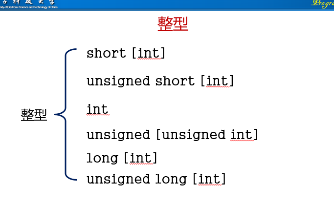
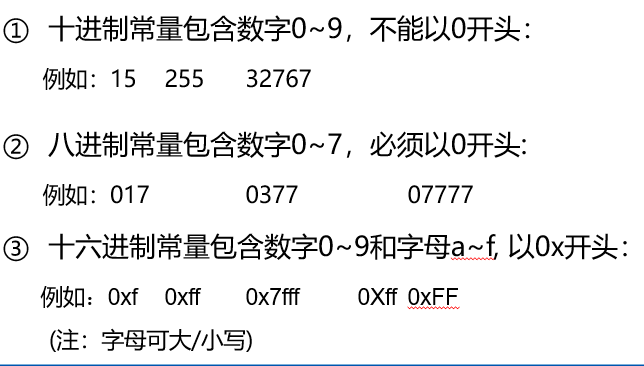
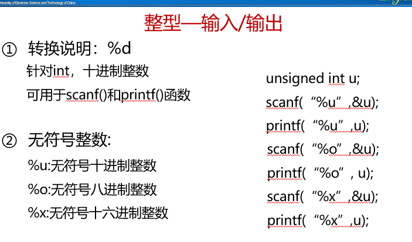
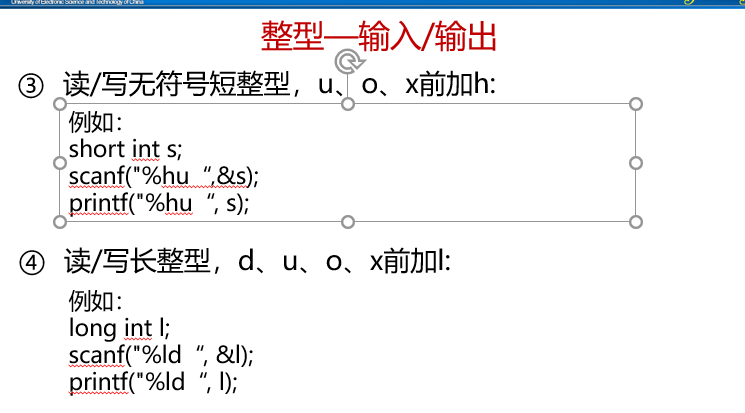
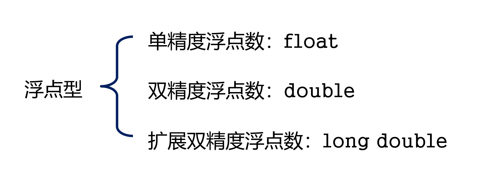
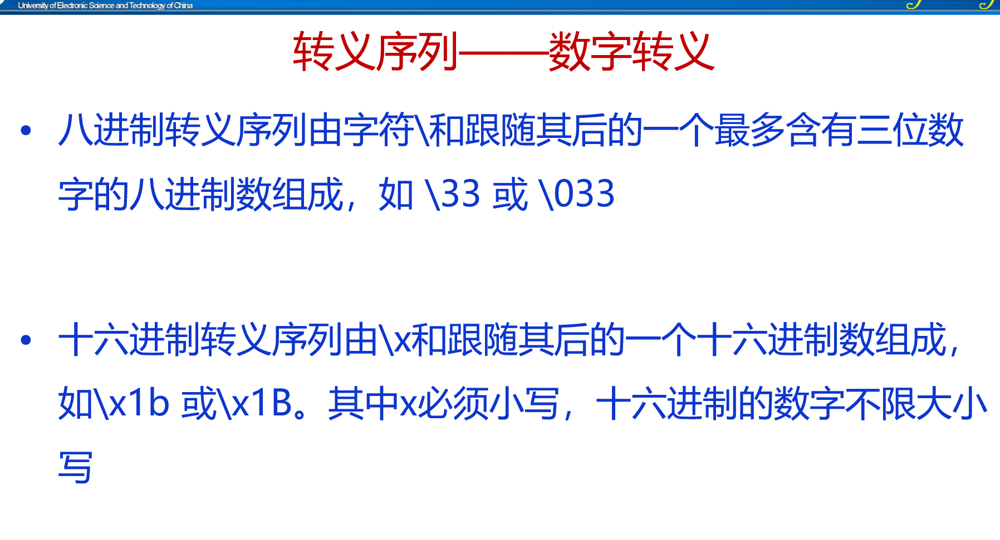

7.基本数据类型
1.整型
short表示长度也就是大小比较小的数字，long则相反，signed表示有符号(正负号)的数字，unsigned表示无符号数字，数字默认是有符号的
  2.浮点型
float用于精度没那么高的数，double 用于精度更高的数，long double 用于精度更高的数，但没那么常用。单精度32位，双精度(double)64位，浮点数以科学计数法存储，每一个数都由符号，指数和小数三部分组成，符号占一个比特，指数部分占8个比特，小数部位占23位，当要用到小数时，要确定小数的精度，如果想要精度更高的话，则需在声明变量时用doubl 变量名 的格式
浮点型常量
小数形式；必须有小数点，如3.14 -12.5等
指数形式：数字 e(E) 指数部分 如3.14e-3 2.57e8 等
浮点型常量通常以double类型存放，如果想以单精度存放，则在数字后加F或f，如果想以long double 类型存放，则在数字后加L或l

3.字符型
用char声明变量，赋值时要给值加上单引号，当计算机中出现字符时，C语言只是使用它对应的整数值
char的类型：signed char 有符号的char 表示范围-128~127;unsigned char 表示范围0~255
转义序列
分为两种，一种是字符转义，就是平常用的\n \a(响铃) 这种，但它的局限性在于它并没有把所有不可打印的字符涵盖进去，另一种是数字转义序列,可以涵盖所有的不可打印的字符